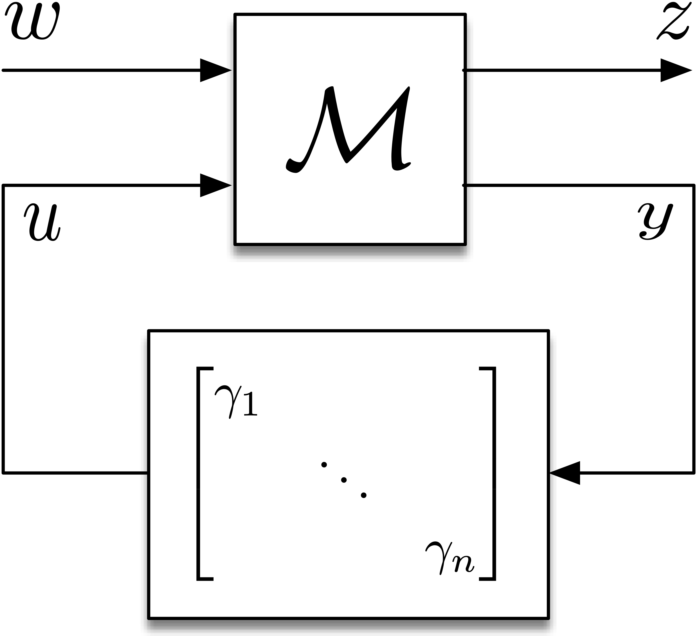
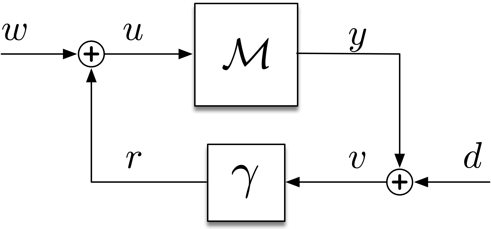
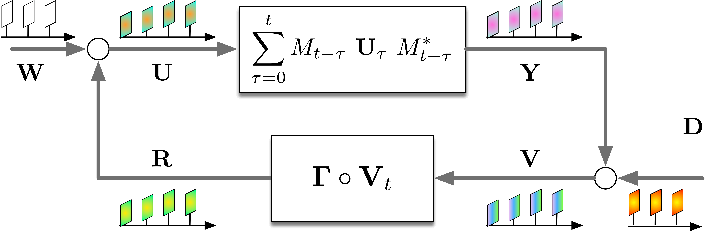
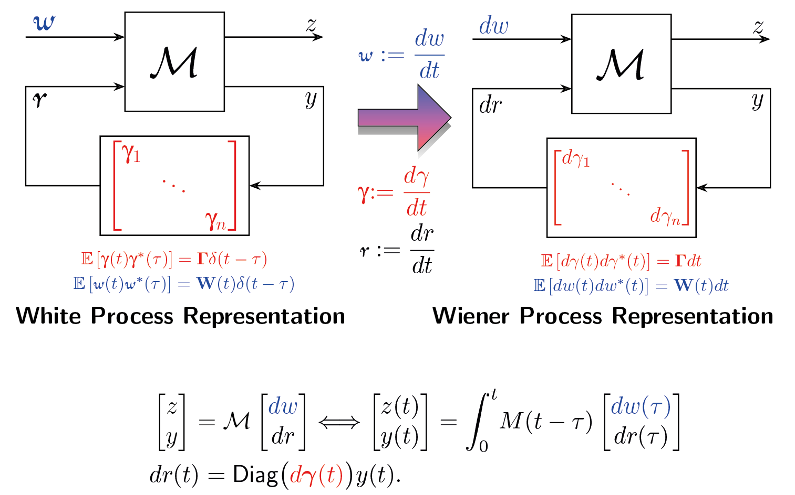
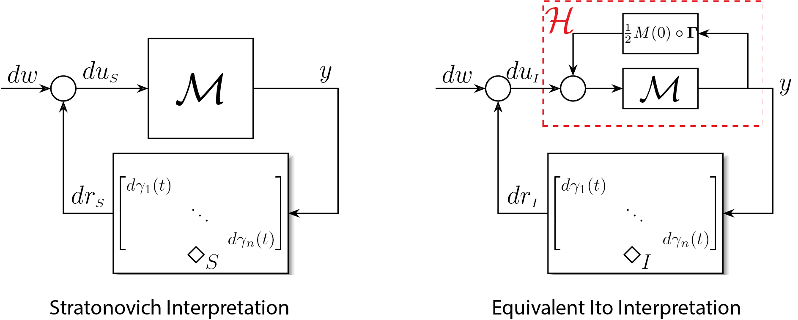

2020

An Input–Output Approach to Structured Stochastic Uncertainty
IEEE Transactions on Automatic Control, 2020
Research

Consider the general setting of linear time-invariant (LTI) systems subject to both additive and multiplicative stochastic disturbances. In this framework, the system, denoted as \( M \), is influenced by \( w \), a stationary stochastic process that enters the system additively. Conversely, multiplicative disturbances are modeled through feedback involving time-varying stochastic gains, \( \gamma_1, \ldots, \gamma_n \). These gains are represented as elements of a diagonal matrix, which impacts vector-valued internal signals \( u \) and \( y \). The output signal \( z \) is of particular interest as its variance is used to quantify performance metrics for the system. We are interested in exploring the conditions necessary for achieving mean-square stability in the closed-loop dynamics of both discrete-time and continuous-time systems. It's important to note that while these investigations apply to general input-output configurations, state-space realizations are considered a specific instance within this broader context.
We assume the multiplicative gains are white in time to simplify the mathematical analysis. The analysis in a discrete-time setting is more straightforward due to the well-defined nature of white noise in discrete intervals. Consequently, we first describe the discrete-time setting. Here, we track the instantaneous covariance matrices of the signals within the loop which we describe through a matrix-valued block diagram.
 |
 |
This approach allowed us to introduce a novel operator known as the Loop Gain Operator, defined by: \[ \mathbb{L}(X) := \Gamma \circ \left( \sum_{t=0}^\infty M_t X M_t^* \right), \] where \(\circ\) is the Hadamard product, \( \Gamma \) denotes the covariance of the multiplicative stochastic uncertainties and \( M_t \) represents the impluse response of the LTI syste \( \mathcal M \). Consequently we showed the necessary and sufficient condition for mean-square stability is given by \[ \rho(\mathbb L) < 1, \] where \(\rho\) represents the spectral radius of the operator. Furthermore, we show that the "Perron eigenmatrix" of \(\mathbb L\) represents a sort of worst-case covariance mode that grows the fastest when the stability condition is violated.
In the continuous-time setting, the concept of white noise presents challenges because it is not mathematically well-defined. To address these complexities, we have introduced a new framework termed "stochastic block diagrams." This framework extends beyond the typical scope of stochastic differential equations (SDEs) and is closely related to the lesser-explored stochastic integral equations (SIEs). By conceptualizing white noise as the formal derivative of a Wiener process, we can align the continuous-time approach more closely with its discrete-time counterpart.

We needed to integrate stochastic calculus with our stochastic block diagrams, considering various stochastic interpretations such as Itô and Stratonovich. Consequently, we developed a method at the block diagram level that facilitates conversion between these two interpretations.

Three interesting remarks are worth noting here:
Transfer Function of Forward Block \(\mathcal H\): The transfer function of the forward block \( H \) given by \[ H(s) = (I - M(s)G)^{-1}M(s), \] where \( G \) is calculated as \( \frac{1}{2}M(0)^{-1}\circ\Gamma \) and \( M(s) \) is the transfer function of \( \mathcal M \).
Impact of Initial Impulse Response: If \( M(0) = 0 \), the two block diagrams are identical, indicating no difference between the Itô and Stratonovich interpretations when the impulse response is zero at the initial time. This alignment suggests a form of "strict causality" making the Stratonovich interpretation behave like the Itô interpretation in the mean-square sense.
Temporal Independence and Interpretations: Under the Itô interpretation, the input to the forward block \( du_I \) is temporally independent. In contrast, under the Stratonovich interpretation, the input \( du_S \) is temporally dependent due to the nature of the Stratonovich integral, which anticipates future values. This is a consequence of the Stratonovich integral that “looks into the future”.
This formulation reestablishes the spectral radius condition for mean-square stability, previously derived for the discrete-time scenario. However, the form of the loop gain operator varies depending on the chosen stochastic interpretation. Specifically, the loop gain operator is defined as: \[ \mathbb{L}(X) := \Gamma \circ \left( \int_{t=0}^\infty G(\tau) X G(\tau)^* d\tau \right), \] where \(G\) represents the impulse response of the forward block. For the Itô interpretation, \(G\) is determined by the system \(M\), whereas for the Stratonovich interpretation, it is dictated by the system \(\mathcal{H}\). This distinction illustrates how the loop gain operator adapts to different stochastic frameworks, thereby influencing the stability analysis.
References:
IEEE Transactions on Automatic Control, 2020

IEEE 57th Conference on Decision and Control (CDC), 2018

International Journal of Robust and Nonlinear Control, 2025

IEEE Transactions on Molecular, Biological and Multi-Scale Communications, 2020

IEEE 56nd Annual Conference on Decision and Control (CDC), 2017